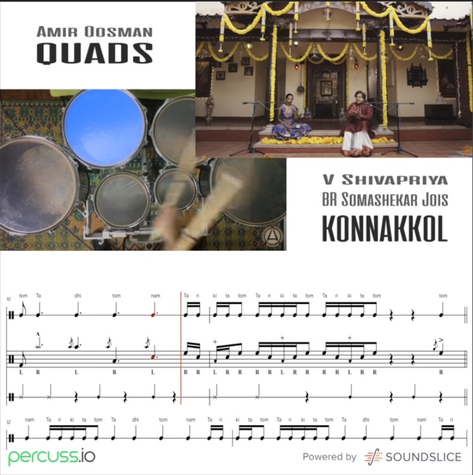

Orquestación III
Clase 011

"Livyatanim "Myth"
película interactiva de Or Fleisher
The Man Who Knew Too Much
Alfred Hitchcock
Lukas Kuhne
Sound Recovered from Video
Édouard-Léon Scott de Martinville
Konnakkol
Instrumentos de Percusión
David Corkhill
Cuadros de una Exposición
Modest Músorgski

Músorgski / Stasov / Hartmann

Orquestación de Maurice Ravel

Postdata
Trabajo pendiente 1: Full Maderas
Trabajo pendiente 2: Orquesta Par (Albúm de la Niñez)
011